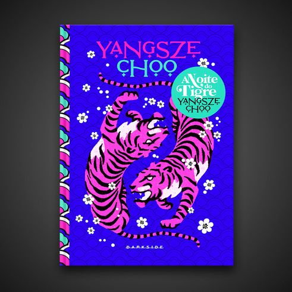

O pequeno órfão Ren acredita em sinais e em destino também. Antes de morrer, seu velho mestre lhe faz um último pedido: que ele encontre o dedo que perdeu em um acidente anos atrás, para que seja enterrado junto com o corpo. De acordo com essa crença folclórica, Ren tem 49 dias para restituir o dedo à sepultura, caso contrário, a alma de seu mestre ficará condenada a vagar entre dois mundos, sem descanso por toda a eternidade.
A bela Ji Lin é uma moça talentosa e inteligente, que sempre se destacou nos estudos. Mas a vida não oferece muitas oportunidades de independência para as mulheres na Malaia dos anos 1930. Quando ela se vê obrigada a abandonar seu sonho de cursar uma universidade, não sobram muitas alternativas para seu futuro além de ser aprendiz em um ateliê de costura. Traumatizada com o relacionamento de sua mãe com um padrasto taciturno e possessivo, Ji Lin está decidida a traçar sozinha seu caminho no mundo, sem um marido que a sustente em troca da perda de sua liberdade.